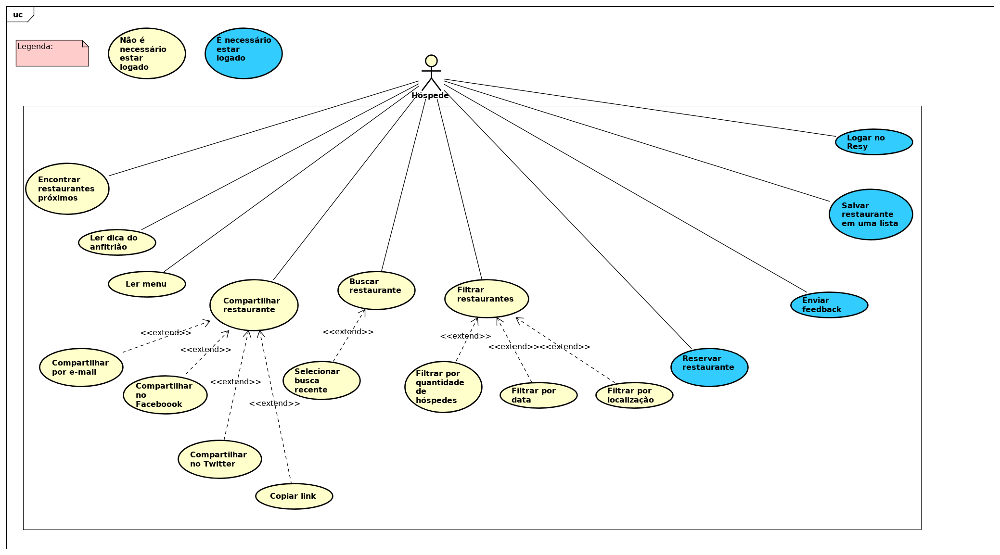

Casos de Uso - Restaurante
2018.2
UC 01 - Buscar Restaurante
| Descrição | Este caso de uso permite ao usuário buscar restaurantes na aplicação. Essa busca pode ser feita filtrando por localização. | ||||||||||||
|---|---|---|---|---|---|---|---|---|---|---|---|---|---|
| Ator | Usuário - Hóspede | ||||||||||||
| Pré-requisitos | Acesso à internet | ||||||||||||
| Fluxo Principal |
1. O usuário acessa o airbnb. 2. Aparece três opções na tela principal, uma para buscar acomodações, outra para experiência e uma para buscar restaurantes. 3. O usuário seleciona a opção Restaurantes. 4. O usuário busca pelo nome ou localidade do restaurante. 5. Aparecem os resultados esperados relacionados a restaurantes. |
||||||||||||
| Fluxo Alternativo 01: |
Buscar diretamente pela barra de pesquisa. 1. O usuário acessa o airbnb. 2. O usuário vai até a barra de pesquisa principal. 3. Sem selecionar qualquer categoria o usuário digita o nome ou local do restaurante. 4. Aparecem resultados referentes a todas as categorias. |
||||||||||||
| Regras de Negócio 01: |
|
||||||||||||
| Fluxo de Exceção 01: |
1. O usuário acessa o airbnb 2. O usuário digita na barra de pesquisa principal um nome inválido de restaurante. 3. Não é encontrado nenhum resultado relacionado a restaurantes. |
||||||||||||
| Pós-condição | Aparecem resultados relacionados ao restaurante ou similares. | ||||||||||||
| Diagrama de Caso de Uso |  |
UC 02 - Reservar Restaurante
| Descrição | Este caso de uso permite ao usuário reservar restaurantes na aplicação. Essa reserva é feita através do "Resy" - Serviço utilizado pelo airbnb para realizar reservas. | ||||||||||||||||
|---|---|---|---|---|---|---|---|---|---|---|---|---|---|---|---|---|---|
| Ator | Usuário - Hóspede | ||||||||||||||||
| Pré-requisitos | Acesso à internet, conta no Resy | ||||||||||||||||
| Fluxo Principal |
1. Acesse a página airbnb.com.br e insira seu local, datas e número de hóspedes. 2. Você pode selecionar filtros para refinar seus resultados de busca por faixa de preços ou horário do dia, ou clicar em Mais filtros para buscar por tipo de culinária. 3. Clique em um restaurante para ler sua descrição e verificar quando as reservas estiverem disponíveis. 4. Clique em uma reserva e, em seguida, revise as informações sobre o restaurante. 5. Leia a política de cancelamento e, em seguida, clique em Confirmar reserva. |
||||||||||||||||
| Fluxo Alternativo 01 |
Acessar diretamente o site do Resy 1. O usuário acessa a página do resy.com, insere o local, data e numero. 2. Clica em restaurante para ler sua descrição e verificar se está disponivel. 3. Clique em reservar e em seguida revise as informações. 4. Leia a política de cancelamento e, em seguida, clique em Confirmar reserva. |
||||||||||||||||
| Regras de Negócio 01: |
|
||||||||||||||||
| Fluxo de Exceção 01 |
Restaurante indisponivel 1. Acesse a página airbnb.com.br e insira seu local, datas e número de hóspedes. 2. O usuário seleciona a data desejada. 3. Data escolhida não está disponivel. |
||||||||||||||||
| Pós-condição | Restaurante é reservado para o usuário e seus hóspedes. | ||||||||||||||||
| Diagrama de Caso de Uso |  |
UC 03 - Selecionar Horário
| Descrição | Este caso de uso permite ao usuário selecionar o horário da reserva dos restaurantes na aplicação. Essa reserva é feita através do "Resy" - Serviço utilizado pelo airbnb para realizar reservas. | ||||||||||||||||
|---|---|---|---|---|---|---|---|---|---|---|---|---|---|---|---|---|---|
| Ator | Usuário - Hóspede | ||||||||||||||||
| Pré-requisitos | Acesso à internet, estar logado | ||||||||||||||||
| Fluxo Principal |
1. Acesse a página airbnb.com.br. 2. Usuário seleciona o horário do dia que deseja ir ao restaurante. 3. Horário da reserva é selecionado e reservado. |
||||||||||||||||
| Fluxo Alternativo 01: |
Acessar diretamente o site do Resy 1. O usuário acessa a página do resy.com, insere o local, data e numero. 2. Clica em restaurante para ler sua descrição e selecionar o horário da reserva. 3. Horário da reserva é selecionado. |
||||||||||||||||
| Regras de Negócio 01: |
|
||||||||||||||||
| Fluxo de Exceção 01: |
1. Acesse a página airbnb.com.br 2. O usuário insere o horário do restaurante que deseja ir ao restaurante. 3. Horário desejado não está disponivel. |
||||||||||||||||
| Pós-condição | Horário da reserva do restaurante é selecionado. |
UC 04 - Revisar Reserva
| Descrição | Este caso de uso permite ao usuário revisar sua reserva de restaurantes na aplicação. Essa revisão é feita através do "Resy" - Serviço utilizado pelo airbnb para realizar reservas. | ||||||||||||||||
|---|---|---|---|---|---|---|---|---|---|---|---|---|---|---|---|---|---|
| Ator | Usuário - Hóspede | ||||||||||||||||
| Pré-requisitos | Acesso à internet, conta no Resy | ||||||||||||||||
| Fluxo Principal |
1. Acesse a página airbnb.com.br e insira seu local, datas e número de hóspedes. 2. Você pode selecionar filtros para refinar seus resultados de busca por faixa de preços ou horário do dia, ou clicar em Mais filtros para buscar por tipo de culinária. 3. Clique em um restaurante para ler sua descrição e verificar quando as reservas estiverem disponíveis. 4. Clique em uma reserva e, em seguida, revise as informações sobre o restaurante. 5. Leia a política de cancelamento e, em seguida, clique em Confirmar reserva. 6. Aparecem os detalhes relacionados a sua reserva, o usuário lê e confirma a sua reserva. |
||||||||||||||||
| Fluxo Alternativo 01: |
Acessar diretamente o site do Resy 1. O usuário acessa a página do resy.com, insere o local, data e numero. 2. Clica em restaurante para ler sua descrição e verificar se está disponivel. 3. Clique em reservar e em seguida revise as informações. 4. Leia a política de cancelamento e, em seguida, clique em Confirmar reserva. 6. Aparecem os detalhes relacionados a sua reserva, o usuário lê e confirma a sua reserva. |
||||||||||||||||
| Regras de Negócio 01: |
|
||||||||||||||||
| Fluxo de Exceção 01: |
Restaurante indisponível 1. Acesse a página airbnb.com.br e insira seu local, datas e número de hóspedes. 2. O usuário seleciona a data desejada. 3. Data escolhida não está disponivel. |
||||||||||||||||
| Pós-condição | Restaurante é reservado para o usuário e seus hóspedes. |
Diagrama Geral de Restaurante
